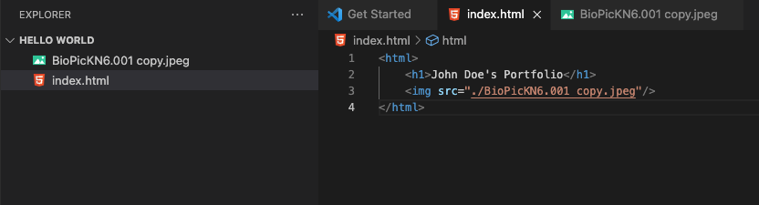
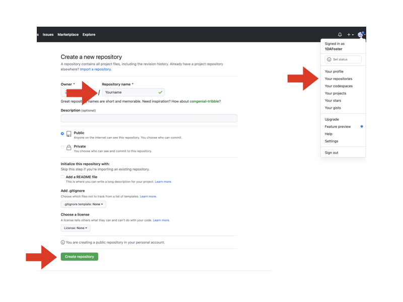

1. Personal Picture
2. Create a Directory (New Folder) on your computer
3. Visual Studio Code (Program)
4. Github.com Account
On your computer, create a new folder in an easy-to-access location. You will use this directory to save an HTML file and your personal picture.

After you download, install and open the program. In the upper left corner, Select File, New Folder, and Open the directory you created. Then, create a new file named index.html. Save it within the new directory. This will be an excellent time to also drag and drop your personal picture into this workspace. (Note the file name of your picture. You will need it as you create your webpage in the next following steps.)

Now click on the file index.html within VSC. To the right of the file name, you will have a blank section where you can write the code for your web page. Below you will find an image of a simple example of how to compose the syntax so that a browser will read your code. Please ensure that you save your work. This step is completed once you save both your HTML and personal image file in the same directory. This will allow you to view both items locally on a browser. Feel free to test this by opening the index.html file from within the directory that you created.
Select the GitHub link above and click Sign up, this will allow you to register and create a username. Once your account is established, you will now drag and drop the two files into a new GitHub repository. Starting in the upper right-hand corner, select your profile, then click on Your repositories. In the new window, select the green button New. Create a repository using your name. This will be the URL used to visit your webpage. After entering your name, scroll down and select Create repository.
Open your new repository and click add file. This page is where you will drop your files. Return to your new directory on your computer to drag and drop the index.html and personal picture files into the GitHub page. After both files are loaded, scroll down and select Commit changes.
